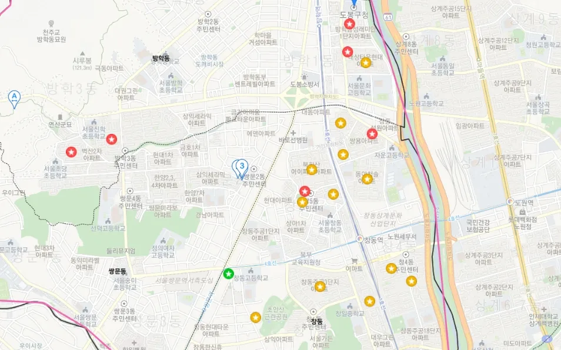
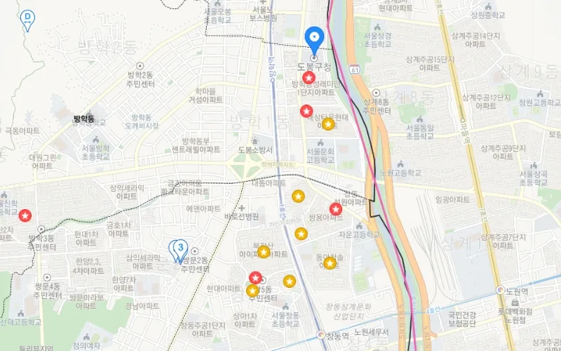
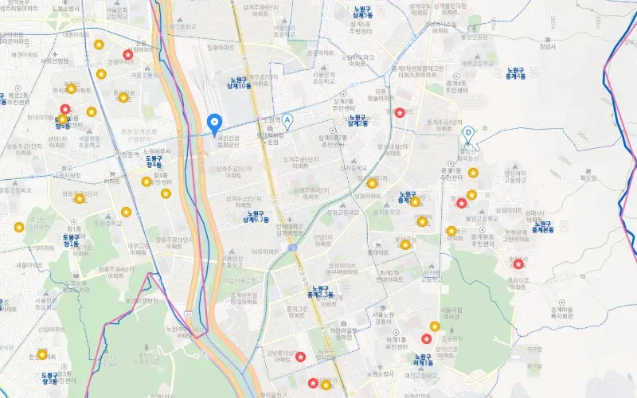
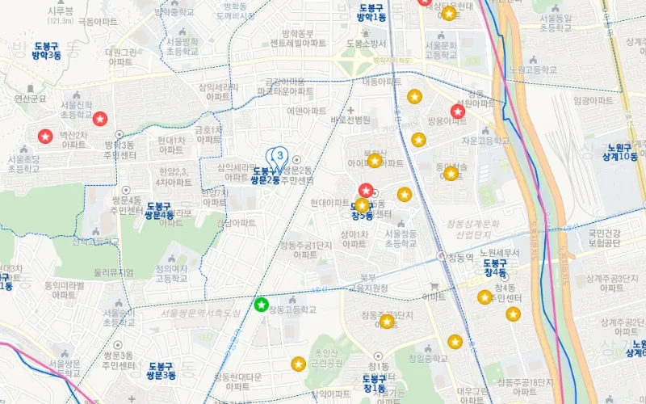
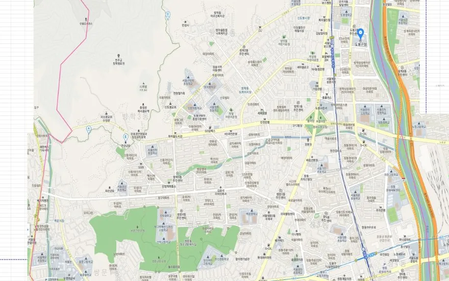
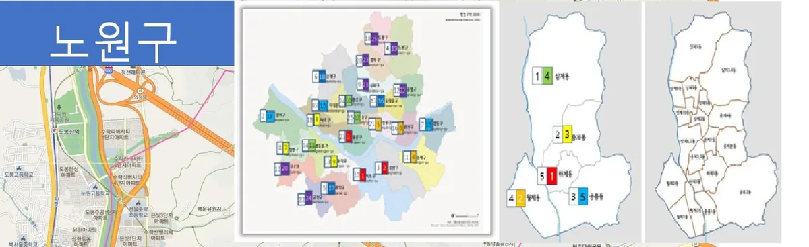

We make your data visible
Your data already knows what works.
We make it visible.
WeMakeVision runs SNS and online marketing on data. We analyse how people actually use your channels and systems, recommend what to do next, and produce the ads and videos to do it, with AI.

Data first
Every recommendation starts from your own data, not from guesses.
AI-made content
Topics, scripts and videos generated and refined with AI, reviewed by people.
Usage-based
Systems judged by how they are really used, not how they were designed.
End to end
From analysis to recommendation to production to measurement.
Services
What we do
Six things, all connected by one idea: decisions should come from data, and content should follow the decisions.
SNS
Planning, posting and growing your social channels, with every decision backed by what the numbers say.
Online Marketing
Campaigns across search, social and display, planned, run and optimised on performance data.
Guide
Strategy and roadmaps. We show you where your marketing and systems should go next, and how to get there.
Assist
Hands-on support for your team: setup, day-to-day operation and troubleshooting of marketing and data tools.
Analysis
Channel, campaign, user-behaviour and system analysis, turned into decisions you can act on this week.
Recommendation Systems
We build and operate data-driven recommendation systems that keep learning from your data after launch.
Products
What you can use today
Four products, one pipeline: analyse what is happening, recommend what to do, and produce it with AI.
Ad Recommendation Engine
A data-driven system that reads your campaign and channel data and recommends where, when and what to advertise next.
- Audience, placement and timing recommendations from your own performance data
- Budget and creative suggestions ranked by expected impact
- Runs continuously, so recommendations move with your data
Video Topic Recommender & Generator
Finds the promotional video topics your audience is most likely to watch, then auto-generates the script, scene outline and first cut.
- Topic candidates scored on your channel and market data
- Script and storyboard generated automatically
- Ready for review in hours, not weeks
AI Promo Video Studio
AI-based production of promotional videos from brief to delivery: script, voice, visuals and edit, in the formats your channels need.
- Shorts, feed and landing-page formats from one brief
- Brand voice and visual style kept consistent across versions
- Fast iterations for A/B testing
Usage-Based System Diagnosis
Analysis and diagnosis of your existing systems based on how they are actually used, with a clear report on what to fix, keep or drop.
- Usage logs and user-behaviour analysis, not guesswork
- Bottlenecks, unused features and risk hotspots mapped
- Prioritised improvement roadmap you can hand to your team
In the field
Local market and area analysis
Before a campaign goes live we map the district: where the demand is, what prices look like, and where an ad or a store would actually be seen. The examples below are from northern Seoul.





Process
How we work
One loop, repeated. Each round makes the next recommendation better.
Collect
Connect your channels, ad accounts and system logs.
Analyse
Find what your audience and users actually respond to.
Recommend
Get ranked recommendations: ads, video topics, system fixes.
Create
AI-generated videos and campaigns, reviewed by people before launch.
Measure
Track results and feed them back into the next cycle.
YouTube
Channels we run
Our own channels are the test bed for everything above: topics are picked by data, shorts are produced with AI, and the results feed the next recommendation. New shorts go out several times a day.
The hottest stories in Korean politics, as shorts. Korean-language channel.
News picks and commentary on Korean politics from the conservative side, as shorts. Korean-language channel.
About
A data and AI company for marketing
WeMakeVision believes most teams already have the data to know what works. It just sits in dashboards nobody reads. We turn that data into recommendations, content and clear next steps.
We work with businesses that want their SNS, advertising and promotional video to be decided by evidence, and with teams that want to know how their existing systems are really being used.
- Small, senior team. You talk to the people doing the work.
- Your data stays yours. We analyse it, we do not resell it.
- Every engagement ends with something you can run yourself.
James Hur has spent more than ten years in consumer electronics R&D as an engineer and project manager, turning sensor data and real-world usage data into product decisions. WeMakeVision applies the same discipline to marketing: measure what people actually do, then decide.
- Career
- 10+ years in consumer electronics R&D. Started in embedded firmware and circuit design, then led projects on sensor, voice and vision-based interaction systems (3D ToF, stereo camera, radar, ultrasound, UWB) from concept to mass production.
- Education
- B.S. in Electronic Engineering, Hanyang University, Seoul (2015). Thesis: driving-lane and road-surface monitoring system.
- Patents
- Inventor on 30 patent filings (US and Korea) in sensing, user detection and device interaction.
- Expertise
- Data analysis and AI (Python, PyTorch, TensorFlow), usage-data KPIs and feature evaluation, multimodal sensor systems, video production (Premiere, Audition)
- Languages
- Korean (native), English (professional)
- Contact
- james.hur@wemakevision.com
Contact
Tell us what you want to get done
A short email is enough. We reply with questions, not a sales deck.
Work with us
Ad recommendation setup, promotional video production, SNS and campaign operation, or a usage-based diagnosis of a system you already run.
Email JamesPartnerships & press
Agencies, platforms and media who want to work with our recommendation and AI video products.
Get in touch